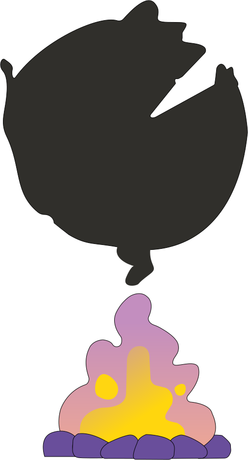

94%
des Français s’informent tous les jours


Les programmes d’information à la télévision et à la radio demeurent des sources majeures pour les Français.
80% des Français s’informent au moins une fois par semaine via une chaîne de télévision, dont 66% quotidiennement.
Les réseaux sociaux et les plateformes vidéo sont consultés quotidiennement par un Français sur deux 53% pour s’informer.
Les jeunes privilégient les réseaux sociaux et les moteurs de recherche, mais 46% des 15-19 ans regardent une chaîne de télévision au moins une fois par jour, et 69% au moins une fois par semaine.
79% des Français suivent régulièrement au moins un journal télévisé, tandis que 61% consultent les chaînes d’information.

En 2023, l'envie de s'informer davantage l'emporte sur la tendance à se détourner de l'actualité. 32% des Français déclarent s'informer plus, poussés par la complexité de l'actualité et le besoin de rester à jour. Ce sont principalement des jeunes, connectés, qui privilégient les réseaux sociaux.
En moyenne, les Français consultent régulièrement 9 sources d’information.

30%
Des français déclarent avoir deja relayé une fake news
76%
Des français sont exposé au moins 1 fois par mois aux fake news
22%
Des français ne croisent pas leurs sources pour vérifier une information lue sur Internet
72%
Des français pensent qu’il est difficile de distinguer un média serieux qui relaye des vraies informations, d’un site relayant des informations non vérifiées
La pyramide de la confiance illustre la hiérarchie perçue par les Français : les entreprises restent stables, tandis que la confiance envers les médias demeure faible.
*Organisation non gouvernementale